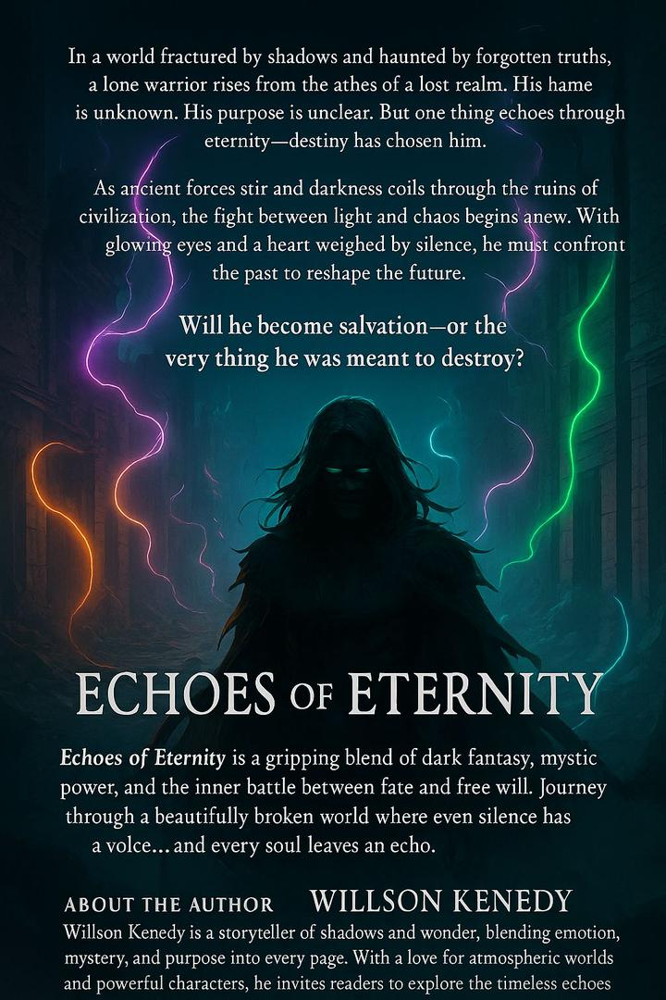

Explore Books
Welcome to My World of Stories
Dive into futuristic tales and inspiring journeys.
Echoes Of Eternity

Now available wherever you buy finer books.
(available in hardcover, paperback, e-book and audio fomart.)

From the back cover:
In a world fractured by shadows and haunted by long-forgotten truths, a lone warrior rises from the ashes of a realm that once thrived. His name is unknown. His past, buried. His purpose—shrouded in silence. But across time and ruin, one thing remains certain: destiny has chosen him.
When ancient forces stir beneath the cracked earth and darkness coils through the ruins of fallen cities, the balance between light and chaos teeters on the edge. This warrior, marked by glowing eyes and burdened with a heavy silence, finds himself thrust into a conflict older than memory. He doesn’t seek glory. He doesn’t seek vengeance. But something within him burns—something that refuses to let the world fade quietly into oblivion.
To survive, he must walk through forgotten paths, confront the ghosts of a broken age, and challenge the very powers that erased his identity. As shadows rise and fate whispers its demands, he must make a choice: to become the salvation the world longs for… or the weapon it fears most.
Will he forge a new future—or become what he was meant to destroy?